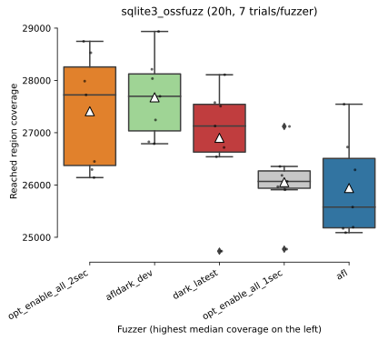
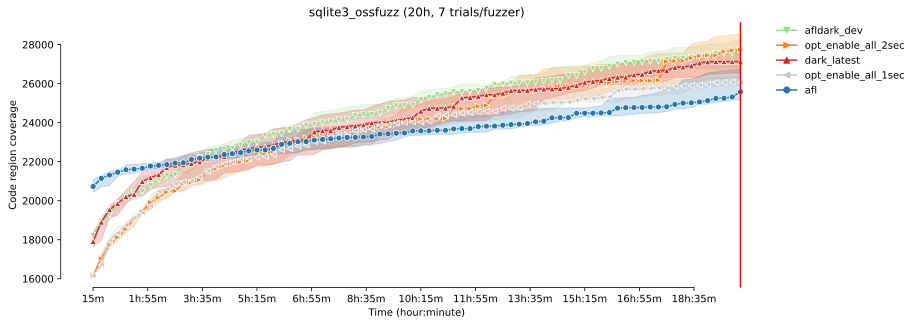
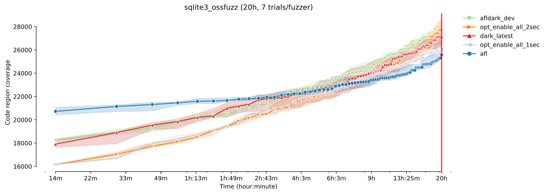
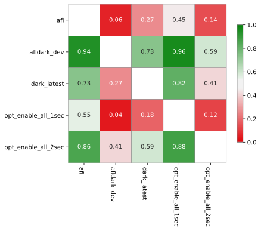
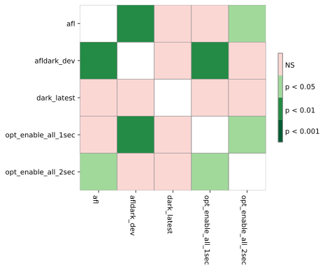

FuzzBench: brain15 report
(experiment incomplete/still running...)
warning
Please consider this as a preliminary report to
demonstrate the capabilities of FuzzBench. While we have
tried our best, we have not confirmed that we configured
everything correctly. We are hoping to work together
with the community to validate results and improve the
set of fuzzers, benchmarks, and their configurations in
the future.
See FAQ
for more details.
experiment summary
No aggregate ranking as the data contains a single benchmark.-
Median code-coverages on each benchmark
fuzzer opt_enable_all_2sec afldark_dev dark_latest opt_enable_all_1sec afl benchmark sqlite3_ossfuzz 27723 27696 27128 26069 25578
sqlite3_ossfuzz summary
Ranking by median reached code coverage

Reached code coverage distribution
Mean code coverage growth over time
Mean code coverage growth over time

* The error bands show the 95% confidence interval
around the mean code coverage.
-
Sample statistics and statistical significance (code coverage)
Code coverage sample statistics
count mean std min 25% median 75% max fuzzer time opt_enable_all_2sec 72000 7.0 27410.428571 1098.475740 26142.0 26373.0 27723.0 28257.5 28747.0 afldark_dev 72000 7.0 27677.000000 785.401808 26789.0 27035.0 27696.0 28124.0 28936.0 dark_latest 72000 7.0 26902.000000 1094.609976 24735.0 26629.0 27128.0 27542.5 28108.0 opt_enable_all_1sec 72000 7.0 26054.142857 696.513563 24774.0 25938.5 26069.0 26269.5 27120.0 afl 72000 7.0 25941.714286 941.696468 25090.0 25181.5 25578.0 26508.0 27545.0
Vargha-Delaney A12 measure  The table summarizes the A12 values from the pairwise Vargha-Delaney A measure of effect size. Green cells indicate the probability the fuzzer in the row will outperform the fuzzer in the column.
Mann-Whitney U test  The table summarizes the p values of pairwise Mann-Whitney U tests. Green cells indicate that the reached coverage distribution of a given fuzzer pair is significantly different.
experiment data
You can download the raw data for this report here.Check out the documentation on how to create customized reports using this data. Also see some example Colab notebooks for doing custom analysis on the data here.
The experiment was conducted using this FuzzBench commit: a28d8f2b1a81d0530ebf92d209e6a728951ffe2c
Experiment Description:
(None,)